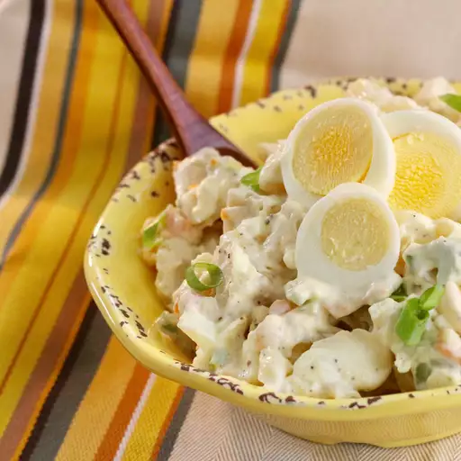

Potato Salad

Ingridients
- 5 pounds red potatoes
- 6 eggs
- 2 cups mayonaisse
- 1 onion diced
- 2 green onions, thinly sliced
- 1 small green bell pepper, seeded and diced
- 3 stalks celery, thinly sliced
- 2 teaspoons salt
- 1 teaspoon ground black pepper
Steps
- Bring a large pot of water to a boil. Add potatoes, and cook for 15 to 20 minutes, or until tender but still firm. Drain, cool and cut into cubes.
- Place eggs in a saucepan and cover with cold water. Bring water to a boil and immediately remove from heat. Cover and let eggs stand in hot water for 10 to 12 minutes. Remove from hot water, cool, peel and chop.
- In a large bowl, combine chopped potatoes and eggs. Mix together mayonnaise, chopped onion, green onion, green pepper, and celery. Season with salt and pepper, then mix well. Cover, and refrigerate for several hours or overnight.
Return to Main